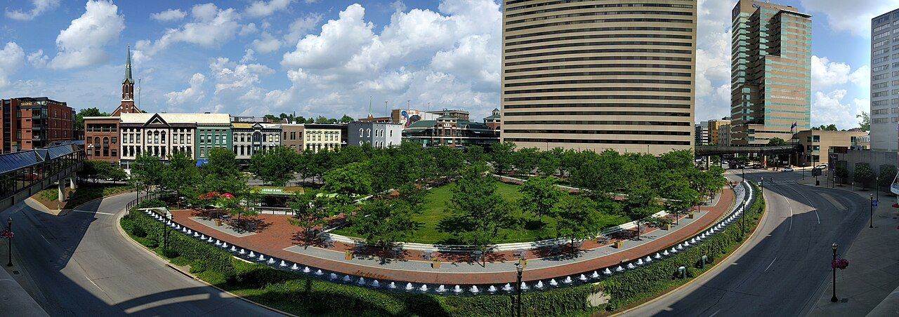

Lexington, Kentucky
Our baseline -- the Horse Capital of the World. This is where we are today.

Key Stats
Overview
This is where we are today -- our baseline for comparison.
Lexington is a mid-sized city of roughly 333,000 people nestled in the heart of Kentucky's Bluegrass Region. Known worldwide as the Horse Capital of the World, the city is surrounded by rolling horse farms enclosed by iconic black plank fences. The University of Kentucky anchors the local economy and cultural life, lending the city a youthful energy and a median age of just 34. Beyond the university, Lexington's economy draws on healthcare, advanced manufacturing, logistics, and a growing technology sector.
The Bourbon Trail runs through the region, with major distilleries within easy reach. Keeneland Race Course hosts thoroughbred meets each spring and fall and serves as a social anchor for the community. Downtown is walkable and compact, with a growing restaurant scene, Rupp Arena for events, and a network of parks and greenways. Red River Gorge, one of the premier climbing and hiking destinations in the eastern United States, is about an hour east.
For families, Lexington offers a solid cost of living well below the national average, good public schools rated A-, a handful of classical Christian school options, and an active homeschool community. The Reformed church presence is moderate -- anchored by Tates Creek PCA -- but smaller than what you would find in the Southeast. Politically and culturally, Lexington is a moderate university city within a conservative state, which can feel like a mixed bag depending on what you are looking for.
Scores
Category scores out of 10. Weighted overall: 6.8 / 10
Cost of Living
Score: 8 / 10
Lexington is one of the most affordable cities in this comparison. The overall cost of living index of 90.8 sits roughly 9% below the national average, with housing being the biggest advantage at an index of 76. Groceries track right at 100, utilities are low at 86, and transportation is modest at 96. Kentucky's flat 3.5% state income tax is reasonable, and the effective property tax rate of 0.87% keeps annual costs on a $400K home under $3,500. The unemployment rate of 3.8% reflects a stable, diversified economy anchored by the university and healthcare sectors.
Housing & Land
Score: 8 / 10
The housing market in Lexington is balanced with a median home price of $330,000 and average days on market of 64 -- neither a frenzy nor a stagnant market. Land availability in the surrounding counties is excellent, with ranch acreage running $6K-$30K per acre. Zoning in Fayette County and surrounding areas is horse-friendly, fitting for a region built on the equine industry.
Notable Neighborhoods
| Neighborhood | Price Range | Family Rating | Notes |
|---|---|---|---|
| Chevy Chase-Ashland Park | $500K-$800K+ | Excellent | Historic charm, tree-lined streets, near UK campus |
| Tates Creek | $250K-$450K | Good | Diverse, inclusive, family-friendly |
| Hamburg | $300K-$500K | Good | Newer subdivisions, retail, family amenities |
| Southern Fayette County | $400K-$1M+ | Excellent | Equestrian estates, 10+ acre lots, rural character |
| Gleneagles | $300K-$500K | Good | Modern developments, green spaces |
Education
Score: 8 / 10
Classical Christian Schools
| School | Grades | Tuition | Notes |
|---|---|---|---|
| Trinity Christian Academy | PreK-12 | $14,229 | Premier classical Christian school since 1988, trivium-based, 438 students. SCL member. |
| Lexington Latin School | JrK-12 | $3,280-$6,705 | Memoria Press curriculum, 3-day hybrid classical program (Tues/Wed/Thurs). Very affordable. Latin begins 2nd grade. |
| Veritas Christian Academy | JK-12 | -- | University Model hybrid homeschool, only one in KY |
Other Notable Private Schools
| School | Grades | Tuition | Notes |
|---|---|---|---|
| Lexington Christian Academy | PreK-12 | $15,000 | Large evangelical Christian school, 1,354 students |
| Sayre School | PreK-12 | $29,600 | Independent college-prep, highly ranked |
Homeschool Co-ops
| Co-op | Type | Notes |
|---|---|---|
| Classical Conversations - Lexington | Classical Christian | Multiple communities, Foundations/Essentials/Challenge |
| CHEB | Christian Support | Christian Home Educators of the Bluegrass |
| Heritage Homeschool Fellowship | Christian Support | PreK-12 supplemental classes and clubs |
| CHC | Christian Co-op | Christian Homeschool of the Commonwealth |
Lexington has three classical Christian school options. Trinity Christian Academy is the standout -- a well-established trivium-based school since 1988 with 438 students and SCL membership. Lexington Latin School is a significant addition: a JrK-12 program using Memoria Press curriculum at remarkably affordable tuition ($3,280-$6,705), meeting three days per week. Veritas Christian Academy offers a University Model hybrid approach, the only one in Kentucky. Fayette County Public Schools carry an A- rating with a 92.4% graduation rate. The homeschool community is strong, with Classical Conversations communities, CHEB, and several Christian co-ops providing robust support networks.
Faith
Score: 5 / 10
Reformed Churches
| Church | Denomination | Size | Notes |
|---|---|---|---|
| Tates Creek Presbyterian Church | PCA | ~700 members | Major PCA congregation, active in church planting |
| Christ Covenant Presbyterian Church | PCA | ~150 members | Founded 1974, one of oldest PCA in Lexington |
| Maxwell Street Presbyterian | PC(USA) | -- | Mainline, not confessionally Reformed |
The Reformed church presence in Lexington is moderate. Tates Creek PCA is the anchor -- a substantial congregation of about 700 members that is active in church planting. Christ Covenant PCA offers a smaller, more intimate community. Beyond those two PCA churches, there are no OPC, EPC, or CREC congregations in the area. The total Reformed count of 3 (including a mainline PC(USA) church) and a density rating of "Moderate" reflect the reality: you can find solid Reformed worship here, but the ecosystem is thin compared to cities in the Southeast. There are no Reformed seminaries in the area. Key Christian organizations include the Lexington Leadership Foundation and CHEB.
Lifestyle
Score: 6 / 10
Climate
Outdoor Recreation
| Activity | Quality (1-5) | Notes |
|---|---|---|
| Equestrian | 5 | Horse Capital of the World; Kentucky Horse Park, extensive trail systems |
| Climbing | 4 | Red River Gorge ~1hr east, world-class |
| Hiking | 3 | Raven Run, Legacy Trail, Veterans Park; Red River Gorge 1hr away |
| Fishing | 3 | Kentucky River, Jacobson Park reservoir |
| Cycling | 3 | Legacy Trail 12-mile paved trail |
Safety & Commute
Lexington has a four-season climate with warm, humid summers and cool winters. At 188 sunny days per year, it falls below the national average of 205 -- overcast and gray days are common, particularly from November through March. The standout outdoor asset is access to Red River Gorge, about an hour east, which offers world-class rock climbing and excellent hiking. Locally, Raven Run Nature Sanctuary and the Legacy Trail provide solid day-use options. As the Horse Capital of the World, equestrian access is unmatched. Cultural life revolves around the university, Keeneland racing, and the bourbon distillery circuit. The commute is easy at 21 minutes average, though the walk score of 34 means you will need a car for most things.
Community
Score: 7 / 10
Lexington is a genuine mid-sized city -- large enough to have real amenities and cultural life, small enough that you run into people you know at the grocery store. The median age of 34 skews young thanks to the University of Kentucky, which means a steady flow of young families and a general energy that some smaller cities lack. The homeschool community is strong, with multiple Christian co-ops and Classical Conversations communities active in the area.
The conservative presence is moderate -- Fayette County itself leans progressive due to the university, while the surrounding region is firmly conservative. This creates a mixed cultural environment. Volunteer culture is active through organizations like CivicLex, the Lexington Leadership Foundation, and UK service-learning programs. The small-town feel that some families crave is not really present here; Lexington is a proper city. But it delivers a good balance of access, community, and family life that serves as a solid baseline for this comparison.
Christian Community Deep Dive
Our current community landscape
Key Pastors & Churches
| Church | Pastor | Denomination | Size | Notes |
|---|---|---|---|---|
| Tates Creek Presbyterian | Mark Randle | PCA | ~700 | Flagship PCA congregation; anchor of the Bluegrass Network; shares campus with Trinity Christian Academy; two Sunday services (9:00 AM, 11:15 AM) |
| Hope Presbyterian | Marshall Wilmhoff | PCA | -- | Downtown church plant; part of the Bluegrass Network; represents the newer, church-planting energy of Lexington's PCA community |
| Christ Covenant Presbyterian | -- | PCA | ~150 | Founded 1974 (one of the oldest PCA in the area); recently relocated to Versailles, just west of Lexington |
| Reforming Truth Church | Jeremiah Hurt | Reformed Baptist (1689) | ~100-200 | Planted 2012; 1689 Second London Baptist Confession; classical theism, covenant theology, Calvinistic soteriology; three pastors (Hurt, Pangborn, Napier) |
The Reformed community is small but real. Total across all congregations is roughly 1,000-1,500 adults -- a tight-knit minority in a city of 333,000, but highly organized and interconnected. Tates Creek has seen "incredible growth" over the past five years even while giving away members to church plants.
The Bluegrass Network
This is the institutional backbone of PCA church planting in central Kentucky -- and the strongest signal that the Reformed community here is growing, not static.
| Church | Location | Role |
|---|---|---|
| Tates Creek Presbyterian | Lexington, KY | Anchor church |
| Hope Presbyterian | Lexington, KY | Downtown plant |
| Grace Presbyterian | Danville, KY | Regional partner |
| Covenant Presbyterian | Cynthiana, KY | Regional partner |
| Covenant Community Church | Richmond, KY | Regional partner |
Each member church contributes approximately $40,000 per year to the network for church planting. The strategy is to develop future pastors, officers, and lay leaders, with new plants intended to become self-sustaining and then join the multiplication effort. The fact that Tates Creek has grown even while seeding new congregations suggests healthy momentum -- not a zero-sum game.
Robert Cunningham
The most visible conservative Christian public voice in Lexington. Cunningham served 17 years as senior pastor of Tates Creek Presbyterian before founding Christ for Kentucky, a ministry applying Christian principles to Kentucky's cultural and political landscape. He is a graduate of Covenant Theological Seminary and a Ph.D. candidate at the University of Leicester (religion in America's founding era). Cunningham writes regularly for the Lexington Herald-Leader, provides religion and culture commentary for Kentucky Sports Radio, and has been featured in Christianity Today, WORLD Magazine, and the New York Times. His board of advisors includes figures from Baird Private Wealth, American Risk Services, and SVN Stone Commercial Real Estate -- bridging Reformed theology, cultural engagement, and Lexington's business community in a way few local pastors do.
Lexington Leadership Foundation
The primary cross-church, city-transforming Christian organization in Lexington. LLF serves as a hub connecting churches, businesses, and government around shared mission.
| Program | Focus | Details |
|---|---|---|
| Urban Impact | Youth Development | Equips children facing barriers to grow, succeed, and lead |
| Fatherhood Initiative | Family Strengthening | Tools for fathers to overcome relationship barriers |
| The Prayer Room | Prayer & Worship | Citywide 24/7 prayer and worship ministry; led by Tommy Green |
| Amachi | Youth Mentoring | Mentoring for youth impacted by parental incarceration |
LLF has operated for 25+ years and partnered with 109 community entities in 2023 alone. For a family already in Lexington, volunteering with LLF is one of the fastest ways to connect across denominational lines and plug into the broader Christian ecosystem.
Schools & Homeschool
| School / Co-op | Leader | Type | Notes |
|---|---|---|---|
| Trinity Christian Academy | Luke McAnally & Brooks Ward | Classical Christian (PreK-12) | ~500 students; shares campus with Tates Creek PCA; SCL member; 8:1 student-teacher ratio; premier classical option since 1988 |
| Lexington Latin School | Cassie Corbett | Classical Christian | ~101 students (projecting to 275); Memoria Press curriculum; Latin from 2nd grade; very affordable tuition ($3,280-$6,705) |
| Veritas Christian Academy | Lynn Wilson | University Model (hybrid) | Only university-model school in Kentucky; 2-3 days/week classroom + parent-directed home instruction; classical liberal arts |
| Lexington Christian Academy | Jeff Jones | Non-denominational Christian (PreK-12) | ~1,200-1,500 students; largest Christian school in Lexington; mainstream evangelical, not classical |
Homeschool Co-ops
| Co-op | Type | Notes |
|---|---|---|
| CHEB (Christian Home Educators of the Bluegrass) | Christian Co-op | Primary Christian homeschool co-op; meets Mondays at Tates Creek Christian Church; core + elective courses for middle/high school; Learning Zone for K-5 |
| Classical Conversations | Classical Christian | At least one community in Lexington; Foundations, Essentials, and Challenge programs |
| CHC (Christian Homeschool of the Commonwealth) | Christian Co-op | Weekly classes throughout the school year; social and family events |
Facebook groups for connection: "Bluegrass Education," "Central KY Co Op," "Central Kentucky Homeschool Social Group," and "Lexington Kentucky Homeschoolers."
Honest Assessment
The Reformed community in Lexington is small but punching above its weight. Multiple indicators point to growth -- Tates Creek expanding while planting new churches, the Bluegrass Network investing $200K+ per year collectively, Hope Presbyterian as a recent downtown plant, classical Christian education as the fastest-growing school segment, and renewed spiritual energy from the 2023 Asbury Revival (50,000-70,000 visitors, 30 minutes south in Wilmore).
Strong institutional infrastructure (Bluegrass Network, LLF, CHEB, Trinity Christian). Cultural engagement through Robert Cunningham and Christ for Kentucky. Cross-church cooperation across 66+ congregations. Complete K-12 classical Christian and homeschool ecosystem. Proximity to Southern Seminary (Louisville, 80 mi) and Asbury Seminary (Wilmore, 30 min).
Small relative to the city -- 1,000-1,500 Reformed adults in a metro of 333,000. No OPC, EPC, or CREC congregations. Christ Covenant's relocation to Versailles reduces the PCA footprint within city limits. No Reformed megachurch -- Southland Christian (12,000 attendance) dominates the evangelical landscape but is not Reformed.
The University of Kentucky (35,000+ students) makes Lexington more secular than surrounding Kentucky -- approximately 44% of the metro has no known religious affiliation. However, UK also hosts robust campus ministries (RUF, Cru, CSF, Campus Outreach) that feed into local churches. Conservative Christians are present and organized but operate in a more pluralistic environment.
How to Get Involved
This is the baseline city -- what a family already here should be doing to go deeper.
| Step | Action | Details |
|---|---|---|
| 1. Commit to a church | Show up consistently | PCA: Tates Creek (flagship, two services), Hope Presbyterian (downtown, intimate). Reformed Baptist: Reforming Truth (1689 confessional, planted 2012). Join a parish group or small group immediately -- this is where real relationships form. |
| 2. Plug into LLF | Volunteer or attend a Prayer Room gathering | Lexington Leadership Foundation crosses denominational lines. Urban Impact, Fatherhood Initiative, and Amachi all take volunteers. Contact Christian Postel's team at lexlf.org. |
| 3. Join a homeschool co-op | CHEB or Classical Conversations | CHEB meets Mondays at Tates Creek Christian Church. Classical Conversations runs Foundations, Essentials, and Challenge programs. Both build deep family-to-family connections. |
| 4. Explore schools | Visit Trinity Christian Academy first | TCA shares a campus with Tates Creek PCA -- the institutional overlap is significant. Lexington Latin and Veritas offer smaller, more affordable alternatives. |
| 5. Follow Robert Cunningham | Read his Herald-Leader columns and KSR commentary | Christ for Kentucky (christforky.org) hosts events. His network bridges theology, culture, and Lexington's business community. A natural connection point. |
| 6. Cross-church fellowship | Men's R-Group, campus ministry, conferences | The Cross Ministry Group runs a men's R-Group on Sundays at 2:30 PM. RUF at UK (campus minister Nick Bratcher) connects to the PCA pipeline. Asbury University in Wilmore (30 min south) hosts chapel and spiritual emphasis events open to visitors. |
The community is small enough that you will know most of the key people within a year. The Bluegrass Network, LLF, and the shared Trinity-Tates Creek campus create natural overlaps. Lexington does not have the scale of a Greenville or Nashville, but the people who are here are invested, collaborative, and building something that is growing.
Pros and Cons
Advantages
- Affordable cost of living -- 9% below national average with low housing costs
- Excellent land availability with horse-friendly zoning in surrounding counties
- Strong homeschool community with multiple Classical Conversations communities and Christian co-ops
- Three classical Christian schools: Trinity Christian Academy (established), Lexington Latin School (affordable Memoria Press hybrid), and Veritas (university model)
- World-class equestrian access and Red River Gorge within an hour
- Young median age and university energy create a vibrant family environment
- Short commute times and balanced housing market
- No relocation risk -- this is where we are today
Disadvantages
- Thin Reformed church ecosystem -- only 2 PCA churches, no OPC/EPC/CREC
- 188 sunny days per year is below the national average; gray winters
- Walk score of 34 means car-dependent for daily life
- University city leans progressive, which can dilute conservative community
- No small-town feel -- a proper mid-sized city
- Property crime rate of 2,400 per 100K is above average
- Classical school options improving (3 schools) but still fewer than Southeast cities
- No Reformed seminary presence in the area